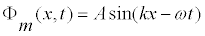

Oscillator Chain Reflection models a one-dimensional linear array of coupled simple harmonic oscillators with mass M1 and mass M2 on the left and right halves of the chain, respectively. The model is driven at the left end and attached to a sliding rod shock absorber at the right end. The right end mass and damping of the shock absorber are chosen to eliminate reflections at the driving frequency.
The driven end produces a wave propagating in the positive x-direction with a wave function

where A is the amplitude, ω=2πf is the angular frequency, and k=2π/λ is the wave number. A standing wave pattern is formed on the chain's left half because the mass discontinuity at the center produces a reflected wave. A transmitted traveling wave is observed on the right half of the chain and this wave is absorbed at the boundary.
This simulation was created by Wolfgang Christian using the Easy Java Simulations (Ejs) modeling tool. You can modify this simulation if you have Ejs installed by right-clicking within a plot and selecting "Open Ejs Model" from the pop-up menu. Information about Ejs is available at: <http://www.um.es/fem/Ejs/>.